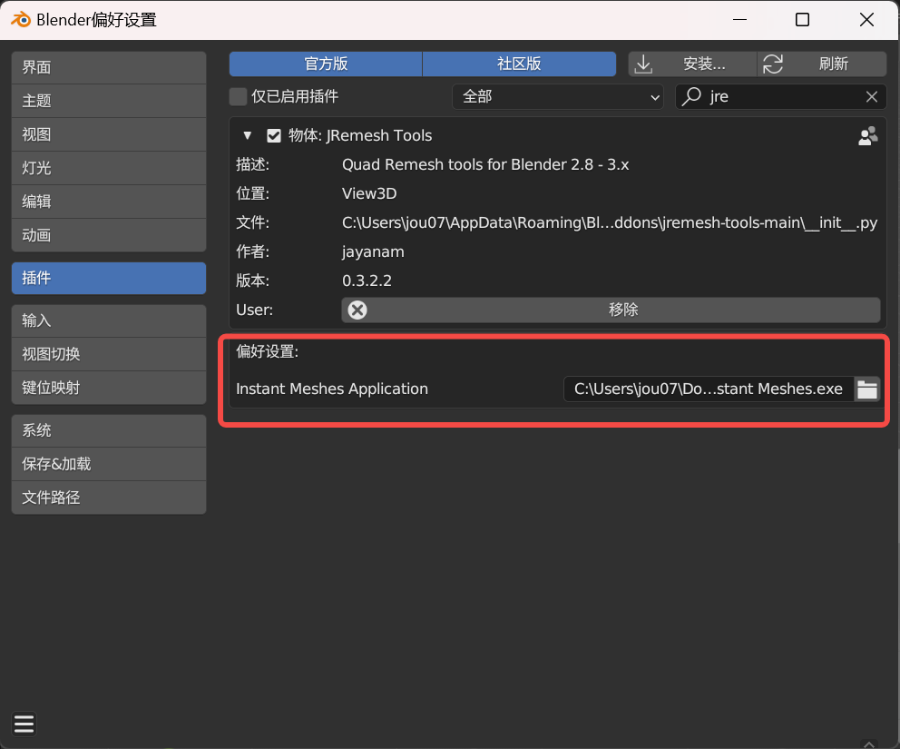
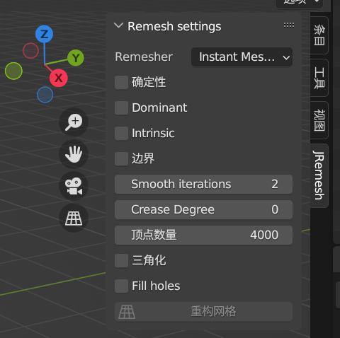
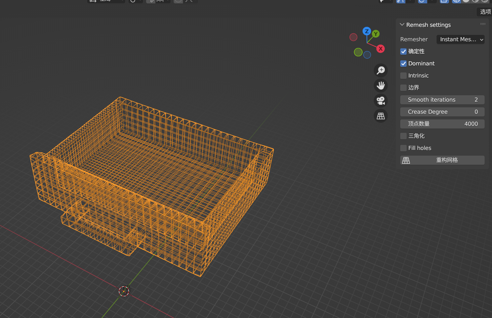

使用Blender将三角形mesh转为四边形
2023-09-23
1 min read
介绍
使用三维软件建模后，发现导出的mesh文件是由三角形组成的面，那么如何将该 mesh 转成由四边形组成的面呢？可以使用 Blender 来完成这一操作。

我们需要安装一个 Blender 插件：jremesh-tools，直接在 github 选择下载 ZIP 压缩包。
参照提供的部署流程，我们再去下载 instant-meshes，可以直接下载编译好的二进制文件-Pre-compiled binaries(windows)。
然后，将 jremesh-tools 插件导入到 blender 中：
- 插件安装流程：Blender-编辑-偏好设置-插件-安装-选择下载好的zip压缩包-安装插件-勾选单选框

之后，点开单选框左边的箭头，在偏好设置中，将之前下载好的 instant-meshes 的二进制文件 Instant Meshes.exe 添加到路径中。

添加完路径后，在 Blender 主界面按 N 键，出现选项卡，选择 JRemesh

之后，导入并选中我们的 mesh 模型，点击重构网格，即可生成由四边形面片构成的 mesh。

如果报错 JRemesh: Path to Instant Meshes is missing ，参考 JRemesh: Path to Instant Meshes is missing. #9，是 instant-meshes 的路径没有正确索引到。